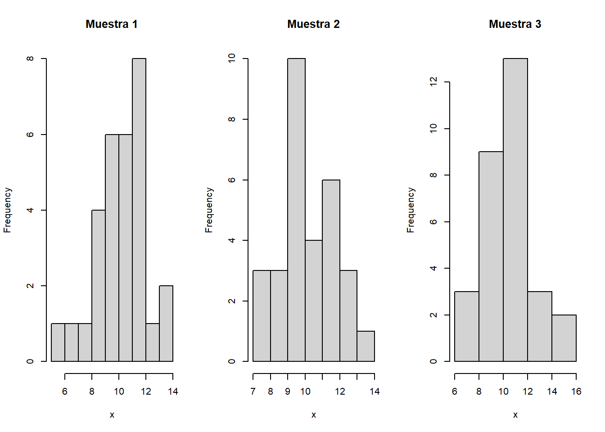
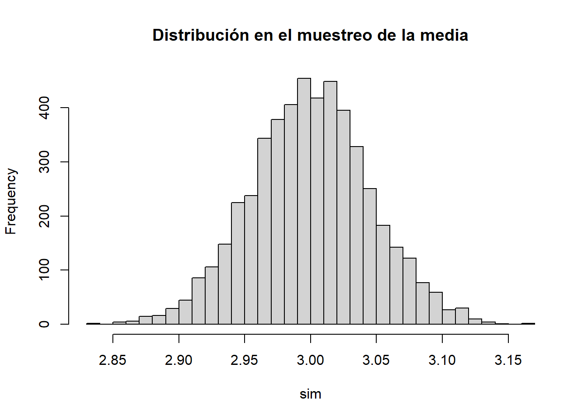
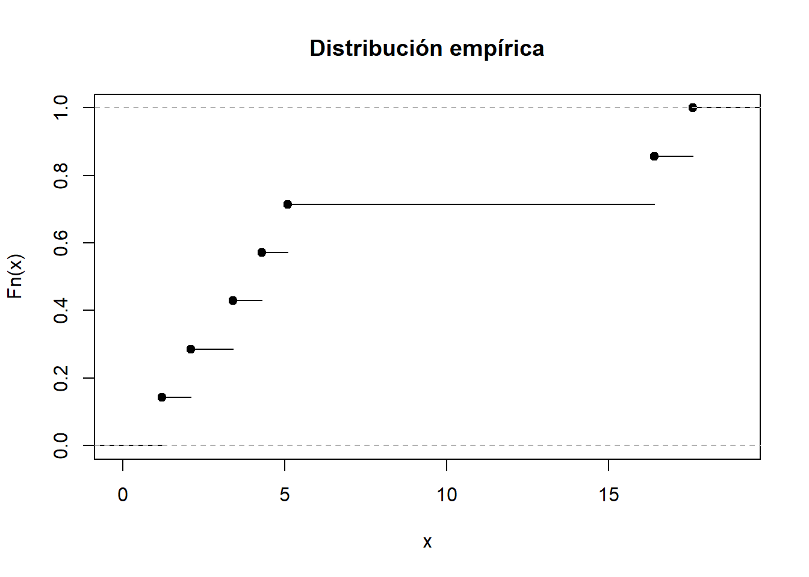
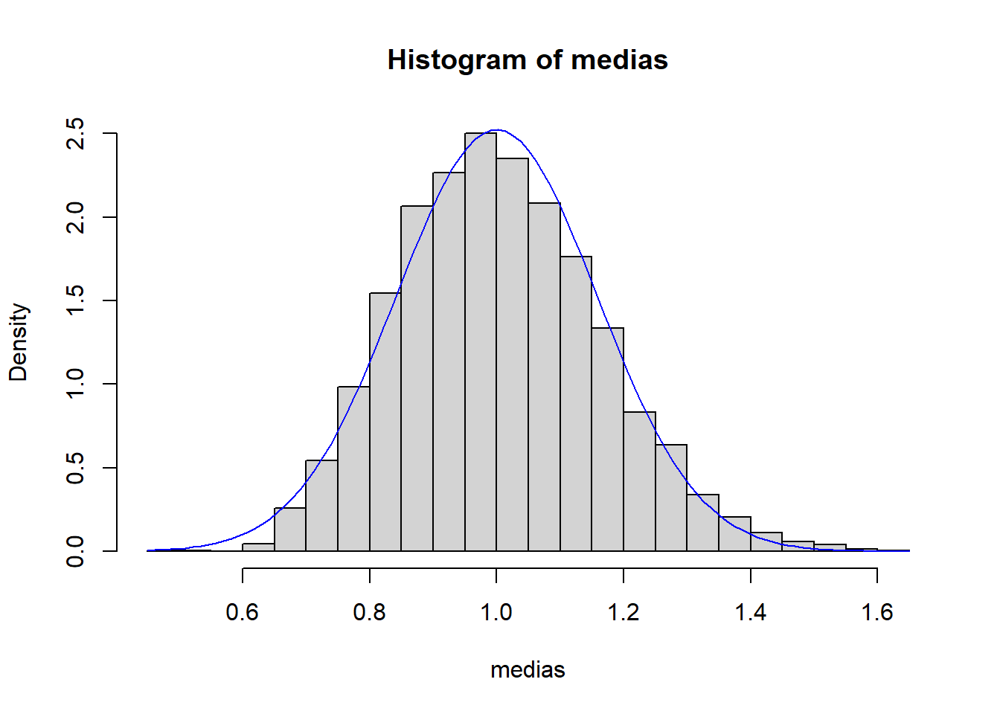

Capítulo 6 Introducción a la inferencia estadística
6.1 Inferencia estadística
El cálculo de probabilidades proporciona el marco matemático para modelizar fenómenos en los que interviene el azar. En este contexto, partimos de un espacio de probabilidad \((\Omega, \mathcal{A}, P)\) y una variable aleatoria \(X: \Omega \to \mathbb{R}\).
Cuando su distribución es conocida, podemos:
- realizar cálculos deductivos (por ejemplo, probabilidades o cuantiles),
- modelizar fenómenos aleatorios usando distribuciones que consideramos razonables.
Por ejemplo, si asumimos que el peso de los recién nacidos se distribuye como una \(N(\mu=3\text{ kg}, \sigma=0.25\text{ kg})\), podemos calcular la probabilidad de que un recién nacido pese entre 2.9 y 3.1 kg, o determinar un intervalo que contenga al 50% o al 95% de las observaciones.
En todos estos ejemplos, partimos de un modelo probabilístico conocido y, a partir de él, obtenemos conclusiones.
En inferencia estadística ocurre lo contrario:
tenemos una muestra \((x_1, \ldots, x_n)\) y queremos aprender sobre la distribución desconocida que generó esos datos.
No es factible pesar todos los recién nacidos ni medir exhaustivamente todos los individuos de una población. La idea es que una muestra bien tomada debe contener información suficiente para decir algo sobre la población.
Así, el objetivo de la inferencia estadística es:
Obtener información sobre la distribución de probabilidad de un fenómeno a partir de observaciones parciales.
6.2 Problemas de inferencia estadística
Según el tipo de conclusión que deseemos extraer, distinguimos tres tipos de problemas:
Estimación puntual.
Queremos obtener un valor numérico que estime una característica desconocida de la población (media, proporción, varianza…).Estimación por intervalo.
Queremos determinar un intervalo dentro del cual es razonable pensar que se encuentra el parámetro, con un cierto nivel de confianza.-
Contraste de hipótesis.
Queremos decidir si los datos son compatibles con una afirmación sobre la población.- Paramétrico: la afirmación es sobre parámetros.
- No paramétrico: la afirmación es sobre la forma de la distribución.
Estos tres tipos de problemas constituyen la base del resto del curso y de gran parte de la estadística clásica.
6.3 Distribución de la población
En toda situación inferencial existe un cierto grado de desconocimiento sobre la distribución que rige el fenómeno. Consideramos una variable aleatoria \(X\) con distribución \(F\), conocida solo parcialmente.
A menudo expresamos este desconocimiento mediante una familia de distribuciones:
\[ X \sim F \in \mathcal{F}, \]
donde \(\mathcal{F}\) puede ser, por ejemplo:
- todas las distribuciones normales,
- todas las distribuciones simétricas,
- todas las distribuciones discretas sobre \(\mathbb{N}\).
Un caso muy habitual es cuando la distribución está determinada por uno o varios parámetros desconocidos. Entonces escribimos:
\[ \{\,F_\theta : \theta \in \Theta \subset \mathbb{R}^k \,\}. \]
A esta familia la llamamos modelo estadístico: describe las distribuciones posibles para los datos.
6.3.1 Ejemplo
La vida útil de un componente electrónico que no envejece puede modelizarse con una distribución de Weibull:
\[ f_\theta(x) = \begin{cases} \alpha \beta x^{\beta-1} e^{-\alpha x^\beta}, & x\ge 0,\\[4pt] 0, & x<0. \end{cases} \]
La familia de distribuciones asociada es
\[ \mathcal{F}=\left\{F_{\theta}: \theta=(\alpha, \beta) \in(0, \infty) \times(0, \infty)\right\} \]
6.4 Muestra aleatoria simple
Ejemplo: Variabilidad entre muestras

Para estudiar un problema inferencial analizamos una muestra de tamaño \(n\).
Seleccionamos \(n\) individuos de la población:
\[ \omega_1,\omega_2,\ldots,\omega_n, \]
y observamos en ellos la variable de interés \(X\), obteniendo los valores muestrales:
\[ X(\omega_1)=x_1,\; X(\omega_2)=x_2,\; \ldots,\; X(\omega_n)=x_n. \]
En términos probabilísticos, consideramos que estos valores proceden de variables aleatorias:
\[ X_1, X_2, \ldots, X_n, \]
todas con la misma distribución que \(X\) y mutuamente independientes.
6.4.1 Definición (Muestra aleatoria simple)
Una muestra aleatoria simple (m.a.s.) de tamaño \(n\) de una variable aleatoria \(X\sim F\) es una colección:
\[ X_1, X_2, \ldots, X_n \stackrel{\text{i.i.d.}}{\sim} X. \]
La realización de la muestra es el vector de valores observados:
\[ (x_1,x_2,\ldots,x_n)\in\mathbb{R}^n. \]
6.4.2 Distribución de la muestra
La muestra completa puede interpretarse como un vector aleatorio \(n\)-dimensional:
\[ \mathbf{X}=(X_1,\ldots,X_n). \]
Su distribución conjunta es:
\[ G(x_1,\ldots,x_n) = F(x_1)\cdots F(x_n), \]
gracias a la independencia.
6.4.3 Casos particulares
- Variable discreta:
\[ p_G(x_1,\ldots,x_n)=\prod_{i=1}^n p_F(x_i). \]
- Variable absolutamente continua:
\[ g(x_1,\ldots,x_n)=\prod_{i=1}^n f(x_i). \]
6.4.4 Ejemplo
Una moneda con probabilidad \(\theta\) de salir cara define la variable:
\[ X = \begin{cases} 1,& \text{si sale cara},\\ 0,& \text{si sale cruz.} \end{cases} \]
Con \(X\sim B(1,\theta)\).
Si lanzamos 3 veces, la distribución conjunta de \((X_1,X_2,X_3)\) viene dada por:
\[ g_\theta(x_1,x_2,x_3) = \theta^{x_1+x_2+x_3}(1-\theta)^{3-(x_1+x_2+x_3)}. \]
6.5 Estadísticos
Para extraer información sobre la población definimos funciones de la muestra llamadas estadísticos.
6.5.1 Definición
Dada una muestra i.i.d. \(X_1,\ldots,X_n\), un estadístico es cualquier variable aleatoria de la forma:
\[ T = T(X_1,\ldots,X_n), \]
que no depende de parámetros desconocidos.
Un estimador de un parámetro \(\theta\) es un estadístico cuyo rango está incluido en el espacio de parámetros \(\Theta\).
6.6 Distribución en el muestreo de un estadístico
Dado un estadístico \(T(X_1,\ldots,X_n)\), su distribución de muestreo es la distribución de probabilidad de dicho estadístico cuando repetimos el procedimiento de muestreo.
Por ejemplo:
\[ P\left(T(X_1,\ldots,X_n)>t_0\right). \]
Calcular esta distribución puede ser sencillo o extremadamente difícil según la forma de \(T\) y la distribución poblacional \(F\).
Métodos típicos para obtenerla:
- cambio de variable,
- transformaciones,
- uso de la función generadora de momentos,
- Teorema Central del Límite.
6.6.1 Ejemplo
Sea \(X\) una variable con densidad:
\[ f_\theta(x) = e^{-(x-\theta)} e^{-e^{-(x-\theta)}},\qquad \theta\in\mathbb{R}. \]
Consideramos:
\[ T = \sum_{i=1}^n e^{-X_i}. \]
La transformación \(Y=e^{-X}\) sigue una exponencial de parámetro \(e^{-\theta}\). Por tanto, la suma \(T\) sigue una distribución Gamma \(\Gamma(e^{-\theta}, n)\).
6.6.2 Ejemplo
Sea \(X\sim \text{Poisson}(\lambda)\), y \(\bar X\) la media muestral de \(n\) observaciones.
Como \(\sum X_i\sim \text{Poisson}(n\lambda)\), entonces:
\[ P(\bar X=r) = P\left(\sum X_i = nr\right) = \frac{e^{-n\lambda}(n\lambda)^{nr}}{(nr)!}. \]
6.6.3 Ejemplo
Simulación de medias muestrales para visualizar su distribución:
set.seed(1)
sim <- replicate(5000, mean(rnorm(30, mean = 3, sd = 0.25)))
hist(sim, breaks = 30, main = "Distribución en el muestreo de la media")
Aquí \(\theta=(\alpha,\beta)\in(0,\infty)^2\).
Ejemplo 2.
Queremos estimar la masa \(\mu\) de partículas observadas en una cámara de burbujas. Observamos mediciones:
\[ x_i = \mu + \varepsilon_i,\qquad i=1,\ldots,n, \]
donde los errores \(\varepsilon_i\) son simétricos.
- Enfoque paramétrico:
\[ X\sim N(0,\sigma),\qquad \sigma>0. \]
- Enfoque no paramétrico:
\[ X \sim F \in\{\text{distribuciones simétricas}\}. \]
Ambos enfoques son válidos según el grado de simplificación que aceptemos.
6.7 La distribución empírica
A partir de una muestra \(X_1,\ldots,X_n\) podemos asociar una distribución particular basada exclusivamente en las observaciones:
\[ F_n(x) = \frac{k(x)}{n}, \]
donde \(k(x)\) es el número de datos muestrales menores o iguales que \(x\).
Esta distribución se denomina distribución empírica.
En la práctica, ordenamos la muestra:
\[ x_{(1)} \le x_{(2)} \le \cdots \le x_{(n)}, \]
y definimos:
\[ F_n(x) = \begin{cases} 0, & x<x_{(1)},\\[4pt] k/n, & x_{(k)} \le x < x_{(k+1)},\\[4pt] 1, & x \ge x_{(n)}. \end{cases} \]
6.7.1 Ejemplo
Muestra:
\[ 5.1,\; 3.4,\; 1.2,\; 17.6,\; 2.1,\; 16.4,\; 4.3. \]
Ordenada:
\[ 1.2,\; 2.1,\; 3.4,\; 4.3,\; 5.1,\; 16.4,\; 17.6. \]
Podemos representarla con R:

La distribución empírica depende solo de los datos observados y no coincide necesariamente con la distribución poblacional ni con la distribución conjunta del muestreo.
6.8 Momentos muestrales
Sea \(F_n\) la distribución empírica. Sus momentos se denominan momentos muestrales:
\[ a_k = \frac{1}{n}\sum_{i=1}^n x_i^k, \]
y los momentos muestrales centrados:
\[ b_k = \frac{1}{n}\sum_{i=1}^n (x_i - \bar x)^k. \]
6.9 Distribución en el muestreo de los momentos muestrales
Ejemplo: TCL aplicado a momentos muestrales
set.seed(4)
medias <- replicate(4000, mean(rexp(40)))
hist(medias, breaks=30, freq=FALSE)
curve(dnorm(x,1,1/sqrt(40)), add=TRUE, col="blue")
Los momentos muestrales son estadísticos, por lo que tienen distribución de muestreo.
Si denotamos \(\alpha_k = E[X^k]\), entonces:
\[ E(a_k) = \alpha_k \]
y
\[ \operatorname{Var}(a_k) = \frac{1}{n}\left( \alpha_{2k} - \alpha_k^2 \right). \]
En cuanto a la varianza muestral:
\[ s^2 = \frac{1}{n}\sum_{i=1}^n (X_i - \bar X)^2, \]
se obtiene:
\[ E(s^2)=\frac{n-1}{n}\sigma^2. \]
La expresión de \(\operatorname{Var}(s^2)\) es más compleja y depende de los momentos centrados de orden 4.
6.10 Muestreo en poblaciones normales
Cuando \(X\sim N(\mu,\sigma)\), las distribuciones en el muestreo de algunos estadísticos importantes pueden obtenerse exactamente.
Dos estadísticos fundamentales son:
- la media muestral \(\bar X\),
- la varianza muestral \(S^2=\sum_{i=1}^n (X_i - \bar X)^2\).
Partimos de:
\[ \bar X \sim N\!\left(\mu,\; \frac{\sigma^2}{n}\right). \]
Pero la distribución de \(S^2\) es más interesante, ya que da lugar a la primera de las distribuciones derivadas de la normal.
6.10.1 La distribución chi-cuadrado y la varianza muestral
Un resultado fundamental es:
\[ \frac{(n-1)S^2}{\sigma^2} \sim \chi^2_{\,n-1}. \]
Esto significa que la distribución chi-cuadrado no aparece arbitrariamente, sino de manera natural como la distribución del estadístico de variancia muestral en población normal.
Además, la media y la varianza cumplen:
\[ E(\chi_k^2)=k,\qquad \operatorname{Var}(\chi_k^2)=2k. \]
La aditividad proviene directamente de las propiedades de la distribución normal.
6.10.2 La distribución t de Student y el estadístico \(T\)
Si \(\sigma\) es desconocida y la reemplazamos por \(S\), la variable
\[ T = \frac{\bar X - \mu}{S/\sqrt{n}} \]
sigue una distribución t de Student con \(n-1\) grados de libertad.
La t surge de forma natural al estandarizar la media muestral usando la varianza estimada.
Su densidad es:
\[ f(t)= \frac{\Gamma((m+1)/2)}{\Gamma(m/2)\sqrt{m\pi}} \left(1 + \frac{t^2}{m}\right)^{-(m+1)/2}. \]
A medida que \(m\to\infty\), la t converge a la normal estándar.
6.10.3 La distribución F de Fisher y la razón de varianzas.
Si tenemos dos muestras normales independientes:
\[ X_1,\ldots,X_{n_1} \sim N(\mu_1,\sigma_1), \] \[ Y_1,\ldots,Y_{n_2} \sim N(\mu_2,\sigma_2), \]
entonces el cociente:
\[ F = \frac{S_1^2/(n_1-1)}{S_2^2/(n_2-1)} \]
sigue una distribución F de Fisher con \((n_1-1,n_2-1)\) grados de libertad.
Esta distribución aparece naturalmente al comparar dos varianzas muestrales de normales.
Su densidad general es:
\[ f(x)= \frac{m^{m/2} n^{n/2} \Gamma((m+n)/2)} {\Gamma(m/2)\Gamma(n/2)} \frac{x^{m/2-1}}{(mx+n)^{(m+n)/2}}, \qquad x>0. \]
6.11 Apéndice técnico (opcional)
Este apéndice reúne algunos resultados y demostraciones que, aunque útiles, interrumpen el flujo del capítulo si se presentan en la parte principal del texto.
6.11.1 Función generadora de momentos de la media muestral
Sea \(X\) una variable aleatoria con función generadora de momentos \(M_X(t)\).
Consideremos la media muestral:
\[ \bar X_n = \frac{1}{n}\sum_{i=1}^n X_i, \]
donde \(X_1,\ldots,X_n\) son i.i.d. con la misma distribución que \(X\).
Resultado:
\[ M_{\bar X_n}(t) = \left[ M_X\left(\frac{t}{n}\right) \right]^n. \]
Demostración por definición
\[ \begin{aligned} E\left(e^{t\bar X_n}\right) &= E\left(e^{t\frac{1}{n}\sum X_i}\right) = E\left(\prod_{i=1}^n e^{\frac{t}{n}X_i}\right)\\[4pt] &= \prod_{i=1}^n E\left(e^{\frac{t}{n}X_i}\right) = \left[ M_X\left(\tfrac{t}{n}\right)\right]^n. \end{aligned} \]
Demostración alternativa por propiedades
- Para cualquier \(a\), \(M_{aX}(t)=M_X(at)\).
- Por independencia: \[ M_{\sum X_i}(t)=\prod M_{X_i}(t). \]
Aplicando ambas:
\[ M_{\bar X_n}(t) = M_{\sum X_i}(t/n) = \prod M_X(t/n) = \left[M_X(t/n)\right]^n. \]
6.11.2 Momentos centrales y relación con la varianza muestral
Para el momento muestral centrado de orden 2:
\[ b_2 = \frac{1}{n} \sum (X_i - \bar X)^2, \]
se cumple:
\[ E(b_2) = \frac{n-1}{n}\sigma^2. \]
Idea de demostración
- Expandimos: \[ (X_i - \bar X)^2 = X_i^2 - 2X_i\bar X + \bar X^2. \]
- Sumando y tomando esperanzas aparecen términos: \[ E(X_i^2),\; E(\bar X^2),\; E(X_i\bar X). \]
- Usando independencia y simetría se obtiene el resultado final.
El cálculo completo es estándar pero laborioso.
6.11.3 Propiedades asintóticas de los momentos muestrales
6.11.3.1 Convergencia
Los momentos muestrales convergen en probabilidad a los momentos poblacionales:
\[ a_k \xrightarrow{P} \alpha_k. \]
Aplicando la desigualdad de Tchebychev:
\[ P(|a_k - \alpha_k|\ge \varepsilon) \le \frac{\alpha_{2k}-\alpha_k^2}{n\varepsilon^2} \to 0. \]
Esta propiedad será fundamental en la noción de estimador consistente.
6.11.3.2 Distribución asintótica
Usando el Teorema Central del Límite sobre \(n a_k = \sum X_i^k\), obtenemos:
\[ \frac{a_k - \alpha_k}{\sqrt{\operatorname{Var}(a_k)}} \xrightarrow{\mathcal{L}} N(0,1). \]
En particular:
\[ a_k \approx AN\left( \alpha_k,\; \sqrt{\frac{\alpha_{2k}-\alpha_k^2}{n}} \right). \]
6.11.4 Recordatorio: propiedades útiles de la distribución Gamma
Recordamos que si \(Y\sim \Gamma(p, \alpha)\) con densidad:
\[ f_Y(y) = \frac{\alpha^p}{\Gamma(p)} y^{p-1} e^{-\alpha y}, \qquad y>0, \]
entonces:
\[ E(Y) = \frac{p}{\alpha}, \qquad \operatorname{Var}(Y) = \frac{p}{\alpha^2}. \]
Además, si \(Y_1\) y \(Y_2\) son gammas independientes:
\[ Y_1 \sim \Gamma(p_1,\alpha),\qquad Y_2 \sim \Gamma(p_2,\alpha), \]
entonces:
\[ Y_1 + Y_2 \sim \Gamma(p_1+p_2, \alpha). \]
Esto explica la reproductividad de la chi-cuadrado, ya que:
\[ \chi_k^2 \equiv \Gamma\left(\frac{k}{2}, \frac12\right). \]
6.11.5 Derivación estructurada de \(\chi^2\), \(t\) y \(F\)
Aquí resumimos las relaciones esenciales:
6.11.5.1 Varianza muestral en población normal
\[ \frac{(n-1)S^2}{\sigma^2}\sim \chi^2_{n-1}. \]
Surge al sumar cuadrados de variables normales estandarizadas independientes.
6.11.6 Asintótica útil para inferencia
- Media muestral
\[ \sqrt{n}\,(\bar X - \mu)\xrightarrow{\mathcal{L}} N(0,\sigma^2). \]
- Momentos muestrales
\[ \frac{a_k - \alpha_k}{\sqrt{\operatorname{Var}(a_k)}} \xrightarrow{\mathcal{L}} N(0,1). \]
- Distribución empírica (Glivenko-Cantelli)
\[ \sup_x |F_n(x)-F(x)| \xrightarrow{\text{c.s.}} 0. \]
- Teorema Central del Límite
\[ \frac{\sum X_i - n\mu}{\sigma\sqrt{n}} \xrightarrow{\mathcal{L}} N(0,1). \]
Estas propiedades justifican métodos de inferencia aproximada y son el fundamento del método delta y del bootstrap que aparecerán más adelante.